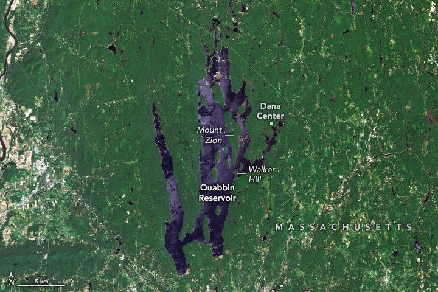

Lost Towns of the Quabbin
By some estimates, there are as many as 92,000 dams in the United States and 1,920 large reservoirs. Among them is the Quabbin Reservoir, one of the largest unfiltered drinking water supplies in the country.
The 412-billion-gallon reservoir in central Massachusetts covers 39 square miles (101 square kilometers) with 181 miles of shoreline. It supplies water to nearly 2.7 million people in the Greater Boston area, as well as three towns in Western Massachusetts. The name is derived from a Nipmuc word meaning “meeting of the waters” used to describe the Swift River Valley.
The OLI-2 (Operational Land Imager-2) on Landsat 9 captured this image of Quabbin Reservoir on June 3, 2025. Dense forests, visible around much of the reservoir, play a key role in maintaining the clarity of the water. Healthy trees and forests serve as a living biofilter, slowing stormwater runoff and filtering sediments and pollutants that might otherwise end up in the reservoir.
The construction of two large earthen structures that impounded the Swift River and Beaver Brook—Goodnough Dike and Winsor Dam—began in 1930 and was completed by April 1935, followed by a seven-year filling period. These two earthen dams are visible in the detailed image below. Look in the large image for a view of the two baffle dams that help direct the flow of the reservoir water and connect Walker Hill and Mount Zion Island.
A more zoomed-in view of the southern part of the reservoir focuses on Winsor Dam and Goodnough Dike, earth barriers that block the flow of the Swift River and Beaver Brook. A label for Enfield Lookout points to an area near the southern part of the reservoir that once had a view of the town of Enfield, which is now flooded.
Filling the reservoir displaced more than 2,000 people and flooded four towns: Dana, Enfield, Greenwich, and Prescott. The photograph below, taken in 1939 as the reservoir was filling, shows water starting to flood a section of Route 21, a road that once connected the towns of Belchertown, Enfield, and Dana.
Today Enfield Lookout offers panoramic views of where Enfield, now completely submerged, once stood. To the northeast, Dana Common, a historic site now managed by the Massachusetts Division of Conservation and Recreation, lies slightly above the water line, but all the town’s buildings have been razed, and only a handful of cellar holes, granite steps, and stone fenceposts remain.
A black-and-white photograph taken in 1939 shows a person standing next to a flooded road. T-shaped electric wires protrude from the flooded area showing where the road leads.
Since much of the land around the reservoir is protected and undeveloped, many types of wildlife thrive in the northern hardwood forests there, including black bears, moose, deer, coyotes, foxes, and bobcats. In 1982, when bald eagles were endangered and had disappeared from the state, wildlife managers reintroduced 41 of the raptors from Michigan and Canada into the reservoir’s forests. Bald eagle numbers have since stabilized and grown. In 2024, the Massachusetts Department of Fisheries and Wildlife reported at least 88 nesting pairs of eagles in the state.
In contrast, a plan to save timber rattlesnakes from extinction in Massachusetts by establishing a colony of the snakes on Mount Zion Island proved unpopular with local residents. Though the island is uninhabited, there was concern that the venomous snakes might swim off of it and cause problems elsewhere.